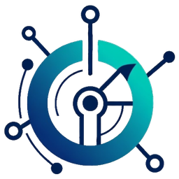

Taskspace Momentum.aiResearch, design, integration, verification, and commercialization for robotics, automation, and Physical AI.
Our services support the accelerator and enablers. Every engineering service on this page backs the Taskspace Momentum Accelerator and our Physical AI & Robotics Enablers, and each one is also available on its own.
A Gen AI lifecycle for Robotics-as-a-Service: bring your own robot, and we train it with Physical AI for your task and deploy it. Our services supply the integration, fixtures, and V&V.
Explore the accelerator →The enabling product behind the accelerator: off-the-shelf robot integration with sensor fusion for AI-in-the-loop automated training.
See the hub →Keep the robot you own or prefer. Specialties: lab automation, test lab fixtures, and reliability test fixtures.
More on BYOR →Each service stands on its own or combines with the others. Most engagements start with one and grow as the system takes shape.
Perception, planning, and control software designed and tested against real sensors, real lighting, and real hardware: inspection, localization, tracking, and guidance.
Robotic capability delivered as an operable service: scoped to a defined task, integrated on site, then monitored, maintained, and improved under change control.
Off-the-shelf arms, grippers, cameras, and controllers selected for the task and integrated into cells and workflows. Vendor-agnostic and built around your process.
Engineers on your floor, in your lab, or embedded with your team to integrate, debug, and stabilize. On site when it matters, remote when that is enough.
Hardware-in-the-loop benches with Physical AI, lab automation, custom fixtures, and traceable test plans, so problems surface on the bench instead of in the field.
Design, development, documentation, and testing on a V-model lifecycle, from user needs to validation, with every requirement traced to verification evidence your reviewers can follow.
End-to-end systems engineering across the program lifecycle, applied to robotics, automation, and Physical AI.
Architecture and requirements decomposition for robotic and Physical AI systems, partitioning perception, planning, control, and hardware so each part can be built, tested, and replaced on its own.
Requirements gathered from operators, QA, and safety stakeholders, written to be testable, and traced from need to design to verification evidence.
V&V planning, test strategy, and acceptance criteria, from unit and integration test through HIL benches and on-site validation.
Hazard analysis, FMEA, and risk controls tracked across the lifecycle, with each mitigation tied to a requirement and a test.
Technical leadership that keeps vendors, internal teams, and site stakeholders aligned on interfaces, gates, and what “done” means.
Integration across software, robots, sensors, fixtures, and plant systems: interface control, bring-up, and debugging at the system-of-systems boundary.
What each service covers. Scope is agreed per engagement; nothing here is a fixed package.
Machines that sense, decide, and act in unstructured or semi-structured environments.
Robotic capacity as a service, scoped to a task instead of a capital project.
Designed and integrated automation that fits the facility and the process.
Coherent systems across vendors, sites, and lifecycle phases.
Engineers who stay with the system until it works where it has to.
Products and platforms that can be sold, supported, and scaled.
Evidence that Physical AI and automation behave under real hardware constraints, before you scale or ship.
Closed-loop benches that couple perception, planning, and control to real sensors and actuators (or high-fidelity plant models) so timing and integration failures show up early.
Automated test cells, data capture, and repeatable experiment workflows for algorithms, components, and subsystems.
Mechanical and electrical fixtures, mounts, and interfaces tailored to your DUT, cell, or vision setup.
Pass/fail criteria and regression suites that keep pace as software and models iterate through engineering and commercialization gates.
For systems where failure is unacceptable. User needs and system requirements decompose down the left side of the V; each level is verified or validated at its matching level on the right, and the trace between them is kept current as the design changes.
From user needs to system requirements, subsystem architecture, and detailed design, with a matching verification or validation level on the right side of the V.
Disciplined implementation of software, controls, and integrated subsystems with configuration management.
Requirements, design, interface, risk/hazard, and verification artifacts ready for review boards and commercialization gates.
Component, integration, and system verification, then validation against user needs, with SIL & MIL early and Physical AI / HIL at the system level.
We provide engineering support for safety cases and evidence packs. This is not a substitute for your regulatory counsel, certification bodies, or your own QA acceptance.
Rigorous process discipline from concept through delivery. These are frameworks our engineering work is structured around; they are not certifications held by Taskspace Momentum LLC.
Lifecycle structure for requirements, architecture, integration, verification, and validation, used to organize engagements from concept through transition.
Hazard analysis, safety requirements, and verification practices for electrical, electronic, and programmable safety-related systems.
Software development, risk, and verification discipline for regulated, high-assurance software.
Safety requirements for robot systems and cells, including collaborative operation, considered from cell design through validation.
Domains, tools, and industries served.
We don't stop at a slide deck or a lab demo. Engagements reduce risk early, prove value in the task space, and leave you with something operable: a product, a service, or an integrated capability.
Pick the shape that fits your program. Terms are set per engagement after a first conversation.
Bring your own robot (or choose a COTS one); we connect it to the integration hub, train it with Physical AI for your task, verify it, and deploy it as RaaS.
A short, fixed-scope look at your task, constraints, and options: build, buy, integrate, or wait. You get a clear recommendation and a plan.
A defined deliverable, such as a HIL bench, a fixture set, a perception module, or a V-model documentation package.
Engineers working inside your program on integration, test, and stabilization, on site or remote.
A deployed cell delivered and supported as a service, with monitoring, maintenance, and controlled updates.
Architecture review, V&V strategy, and commercialization planning for teams that build in-house.
Describe your engineering challenge, the robot or cell you have in mind, or the system you need to verify. We'll respond promptly.